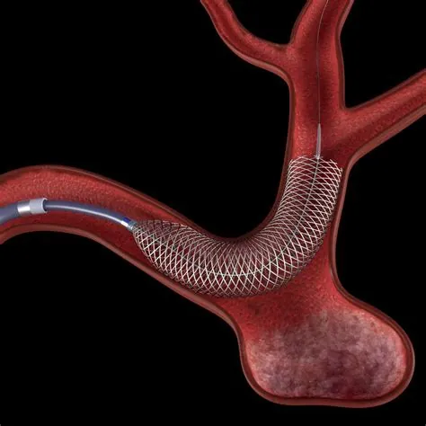

Who should be screened for brain aneurysms?
Who should and should not be screened for brain aneurysms?
What is brain aneurysm screening?
A brain aneurysm is a weak spot in a blood vessel in the brain that can balloon out. Most never cause problems, but if an aneurysm bursts it can cause a serious type of stroke called a subarachnoid haemorrhage (SAH).
Screening for aneurysms means using a special brain scan to look for them before they cause any symptoms. The aim is to find aneurysms in people at higher risk so doctors can advise on monitoring or treatment. Screening is not useful for everyone, but for certain groups it may help reduce the chance of a life-threatening bleed.
Who is at higher risk and should be screened?
Doctors usually only recommend screening if you are in a group with a higher-than-average risk:
Family history: If you have two or more close relatives (parents, brothers, sisters, or children) who have had a subarachnoid haemorrhage, your risk is much higher. Around 8–10% of people in this group will have an aneurysm when screened. The risk is especially high if you are a woman, a smoker, have high blood pressure, or if your affected relative is a brother or sister.
Autosomal dominant polycystic kidney disease (ADPKD): This inherited kidney condition is linked with aneurysms. About 1 in 10 people with ADPKD will have an aneurysm, and the risk rises to 2 in 10 if there is also a family history of aneurysms or SAH.
Coarctation of the aorta: This is a narrowing of the main artery leaving the heart. Around 1 in 10 people with this condition are found to have an aneurysm, probably related to high blood pressure or other unknown factors.
Who does not need screening?
Screening is not advised for most people. The majority of aneurysms never rupture, and testing everyone could cause more harm than good. Discovering an aneurysm can cause anxiety, and treatment itself carries some risk.
Even for people who have already had an aneurysm rupture, the chance of developing a new one each year is very low (0.4–2.2%). In a major study (the ISAT trial), only 9 new ruptures occurred across more than 16,500 patient years of follow-up. Studies have shown that screening this group does not improve overall quality of life, and may even reduce it because of anxiety and potential complications from unnecessary treatment.
How is screening done?
If you fall into a high-risk group, doctors will only arrange screening after a careful discussion of the pros and cons. Important points include:
When to start: Screening is usually started around age 20. Aneurysms are very rare before this age.
How often to repeat: If the first scan is clear, repeat screening is usually suggested every 3–5 years up to age 60–70. The decision depends on your medical history, family history and other risks. For example, if several relatives had an aneurysm rupture before age 40, doctors may stop screening you after age 50 because the main risk period has passed.
What scan is used: The most common test is a 3D time-of-flight magnetic resonance angiography (MRA). This is a type of MRI scan that does not use radiation or injections. It is very good at detecting aneurysms larger than 2 mm, with a sensitivity of 87–100%.
Who reads the scans: Because detecting aneurysms can be tricky, scans should ideally be reviewed by a neuroradiologist (a specialist in brain and blood vessel imaging).
What is the goal of screening?
The main aim of screening is not just to find aneurysms, but to increase the number of healthy years of life. Screening is a balance: it can provide reassurance or identify aneurysms early, but it also carries the risk of worry and complications.
If you are in a higher-risk group, your doctor can talk through whether screening is right for you and help you make an informed choice.
Key takeaways
- Screening is not recommended for everyone.
- It is usually offered to people with:
- Two or more close relatives who have had a subarachnoid haemorrhage
- Autosomal dominant polycystic kidney disease (ADPKD)
- Coarctation of the aorta
- Screening starts around age 20 and may be repeated every 3–5 years until about age 60–70.
- The test of choice is an MRI-based scan called MRA.
- The goal is to improve quality of life, not just to detect aneurysms.
Full guide to brain aneurysms
Take control of your health with clear, expert information:
- What brain aneurysms are
- Diagnosis and treatment explained
- When to seek help

Aneurysm